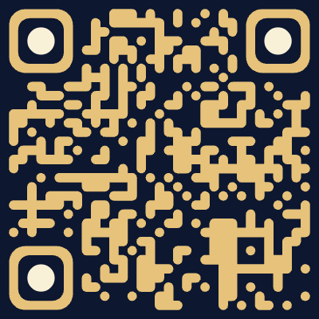

Chapitre VI
拾星
星星 5 / 6
✦ 點一下那顆星星 ✦
La Cité de la Lune
塞納河畔・月之城
星星 6 / 6 · 已集齊
守城人之印
出示你的星辰印記

請將守城人給的 QR Code 對準框內
守城人低語
請說出通關密語
星星已為你證明身份，守城人願再考你一題。
入城許可・已核發
藏寶圖
![藏寶圖]()
月光為證，城門已開
Chapitre VI
星星 5 / 6
✦ 點一下那顆星星 ✦
La Cité de la Lune
星星 6 / 6 · 已集齊
守城人之印

請將守城人給的 QR Code 對準框內
守城人低語
星星已為你證明身份，守城人願再考你一題。
入城許可・已核發
月光為證，城門已開